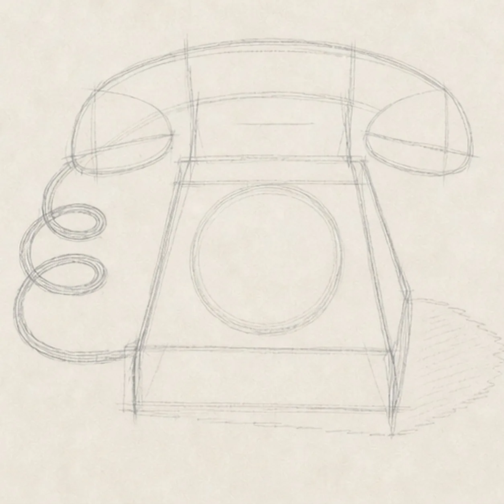
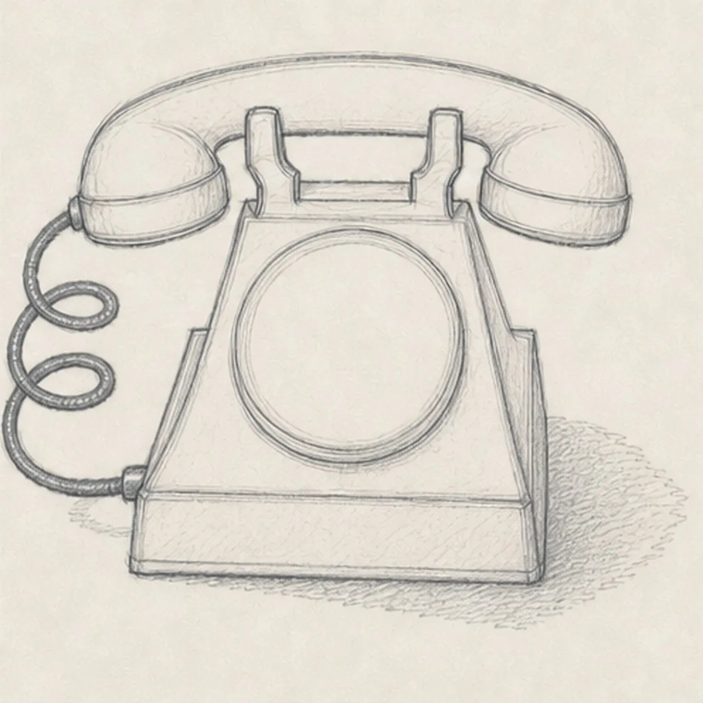

From the archive
Let's draw a vintage rotary telephone
Treat this as one small practice round: build the subject lightly, notice the shapes, then darken only the lines that help the finished sketch.
-
01

Block the telephone geometry
Map a pale sloped three-quarter base box, curved handset envelope with two end-cap ellipses, two cradle positions, one centered dial circle, a cord route with two loop reserves and one loose lower curve, and a broken shadow footprint.
Sketch tip: Ghost the handset arc and the base's two long edges before touching down. Keep the dial centered on the sloped top and reserve the cord now so it has room to coil beside the phone.
-
02

Shape the handset and base
Wrap the guides with the curved handset and two end caps, two cradle forks, sloped desk base, raised dial housing, rear ledge, and one cord following the reserved route.
Sketch tip: Rotate the page for the handset curve and pull each base edge in one relaxed pass. Stop hidden lines where the handset meets the cradle and where the dial housing overlaps the top plane.
-
03
Build the rotary dial
Add exactly ten evenly spaced finger holes, an inner ring, one blank center plate, and one small finger stop inside the established dial housing.
Sketch tip: Mark the top, bottom, left, and right holes first, then fit the remaining six into the gaps. Count all ten before shading and leave the center plate completely blank.
-
04
Connect the telephone hardware
Add mouthpiece and earpiece seam rings, cradle joints, base-panel seams, two small screws, exactly two clear cord loops with one loose lower connecting curve, and one broken graphite cast shadow.
Sketch tip: Trace the cord once from handset to base and keep paper gaps inside both coils. Use short, darker marks for the screws and joints so they do not compete with the large silhouette.
-
05
Shade the bakelite and brass
Model the established form with graphite, add muted burgundy to the handset and base, muted brass to the dial ring and small hardware, charcoal to the cord and deep accents, and preserve paper highlights.
Sketch tip: Curve colored-pencil strokes around the handset and pull them with the base planes. Leave pale paper channels on the glossy edges instead of polishing the telephone into a smooth digital surface.
-
06

Settle the vintage telephone
Strengthen the keeper contours and clarify the established handset, end caps, cradle, base, ten-hole dial, blank center plate, finger stop, two cord loops and lower curve, hardware, restrained colors, paper highlights, and broken shadow.
Sketch tip: Count ten dial holes, two cradle forks, two cord coils, and two screws, then stop while the pencil grain remains visible. Numbers, a logo, desk props, or room scenery would turn this focused telephone study into a different lesson.